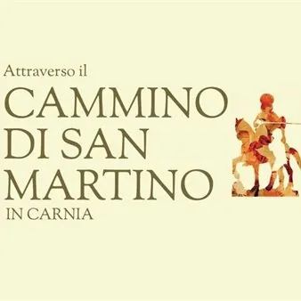

da sab 17 ott a sab 21 nov
Cammino di San Martino
Il tragitto è diviso in sette tappe, una per chiesa a partire da Dierico in Val d'Incaroio e attraversa luoghi prevalentemente a mezza e bassa quota, per lunghi tratti nel silenzio, su antichi tracciati spesso ormai in disuso, toccando borghi spopolati, santuari alpini, cascate…
 Indicazioni
Indicazioni
- Costi e prenotazioni
- Costo non indicato · Prenotazione non indicata
- Programma
- Programma da verificare. Apri la fonte ufficiale per orari e possibili aggiornamenti.
- In caso di maltempo
- Nessuna indicazione specifica pubblicata.
- Note
- Acquisito automaticamente dalla fonte.
L’EVENTO
Descrizione completa
San Martino , il cui senso della carità è stato riconosciuto e apprezzato dalla cultura popolare in ogni tempo, compì numerosi viaggi nel nostro continente allo scopo di evangelizzare, e contribuì così a creare l’identità dell’Europa.
Una leggenda vuole che il Santo, provenendo dalla natìa Sabaria in Pannonia, l’attuale Szombathely in Ungheria, sia passato anche nelle valli carniche, quindi lungo una delle tante trasversali della via Julia Augusta, un antico tracciato con direzione Est Ovest che è stato nei secoli percorso da commercianti, pellegrini, lavoratori, soldati, ... e che, vedendo questi luoghi pittoreschi volle creare una sua “Chiesa”, intesa come comunità di fedeli in Cristo.
Partendo da quest’idea del Santo in cammino alla ricerca dell’essere umano, considerando tutte le numerose chiese, cappelle, edicole a lui dedicate in ogni dove e dunque anche in Carnia, si è pensato di poter compiere un viaggio ideale toccando a tappe tutti gli edifici sacri che portano il suo nome.
Il tragitto è diviso in sette tappe, una per chiesa a partire da Dierico in Val d'Incaroio e attraversa luoghi prevalentemente a mezza e bassa quota, per lunghi tratti nel silenzio, su antichi tracciati spesso ormai in disuso, toccando borghi spopolati, santuari alpini, cascate, pievi solitarie, luoghi artistici, siti archeologici.
Il Cammino si propone di essere un mezzo di promozione del territorio, sviluppo culturale e benessere fisico.
LE SETTE TAPPE
Sabato 17 ottobre: Dierico-Rivalpo
Sabato 24 ottobre: Rivalpo - Cercivento
Sabato 31 ottobre: Socchieve - Forni di Sotto
Sabato 7 novembre: Socchieve - Villa di Verzegnis
Mercoledì 11 novembre: Cercivento - Ovaro
Sabato 14 novembre: Ovaro - Socchieve
Sabato 21 novembre: Verzegnis - Tolmezzo
IL PROGRAMMA
Programma e orari
Appuntamenti raccolti dalle fonti elencate. Dove manca un orario, non è ancora disponibile in questa scheda.
Programma pubblicato
- Dal 2026-10-17 al 2026-11-21
INFORMAZIONI UTILI
Prima di partire
- Controllare la fonte prima di partire.
ORGANIZZAZIONE